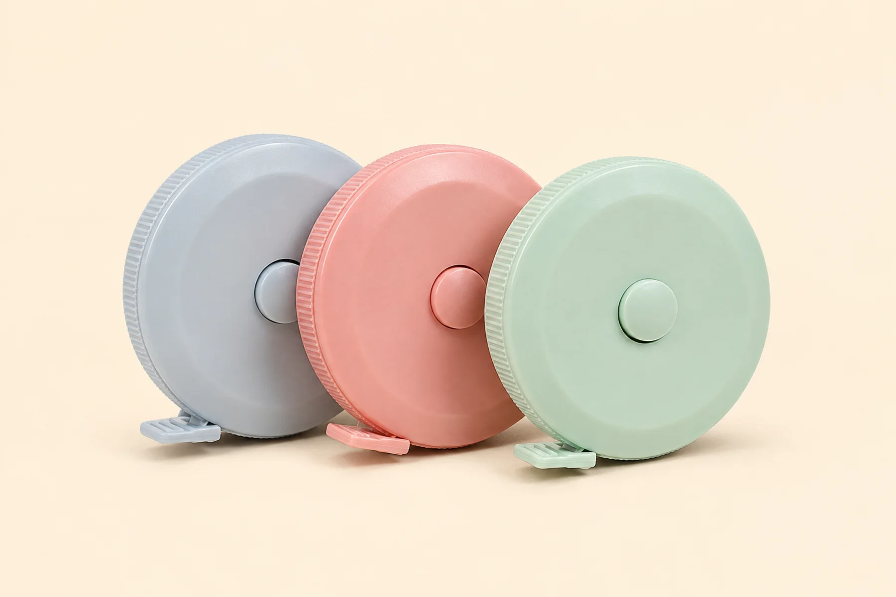

AI 연출 이미지 · 실제 색과 다를 수 있어요직접 찍은 사진이 아니라 제조사 제품 사진의 배경을 AI로 바꾼 연출 이미지예요. 실물과 색·세부가 다를 수 있어요.
미니 줄자
손바닥에 쏙 들어오는 동그란 미니 줄자예요. 1.5m까지 잴 수 있어요.
가격 준비 중곧 판매를 시작해요.
- 크기지름 5cm · 두께 1cm
- 줄자 길이1.5m
- 눈금cm 숫자 · 1mm 간격
- 소재플라스틱
- 포장1개씩 개별 포장
- 제조국중국
- 색5가지
COLOR
줄자 색 5가지
- 코랄핑크
- 핑크
- 화이트
- 민트
- 블루그레이
왼쪽 사진은 블루그레이 · 코랄핑크 · 민트, 오른쪽 사진은 핑크예요. 화이트는 아래 크기 사진에서 볼 수 있어요.
제조사 제품 사진의 배경을 AI로 바꾼 연출 이미지라 화면과 조명에 따라 실제 색과 차이가 있을 수 있어요.
SIZE
손바닥에 쏙, 지름 5cm

손 위에 있는 것이 화이트(앞)와 민트예요.
- 크기지름 5cm · 두께 1cm
- 줄자 길이1.5m (150cm)
- 구조가운데 감기 버튼 · 옆면 톱니 무늬 · 줄자 끝 당김 손잡이
- 눈금cm 숫자 · 1mm 간격
- 소재플라스틱 케이스 · 휘어지는 테이프형 줄자
- 포장1개씩 개별 비닐 포장
- 제조국중국
크기·길이·소재·포장은 제조사가 제공한 정보 기준이며 아직 직접 재 보지 않았어요. 줄자 폭과 무게, 실제 치수는 입고 후 직접 재서 추가할게요.
HOW TO
당겨서 재고, 버튼으로 감아요

왼쪽 사진은 줄자의 끝(150cm) 부분이에요.
-
1
손잡이를 당겨요
옆에 달린 손잡이를 잡고 필요한 만큼 줄자를 뽑아요.
-
2
눈금을 읽어요
흰 줄자에 cm 숫자와 1mm 간격 눈금이 있어 1.5m까지 잴 수 있어요. 휘어지는 줄자라 허리둘레처럼 둥근 곳도 잴 수 있어요.
-
3
버튼을 눌러요
가운데 버튼을 누르면 줄자가 케이스 안으로 감겨 들어가요. 빠르게 감길 수 있으니 손잡이를 잡고 천천히 감아 주세요.
NOTICE
주문 전에 알아 두세요
-
1
생활용 줄자예요
허리둘레나 옷 치수처럼 일상에서 길이를 재는 용도예요. 정밀 계측용은 아니에요.
-
2
1개씩 개별 포장
제조사 포장 기준으로 1개씩 비닐에 담겨 있어 나눠 드리기 편해요.
-
3
AI 연출 이미지예요
이 페이지의 사진은 직접 찍은 것이 아니라 제조사 제품 사진의 배경을 AI로 바꾼 연출 이미지예요. 실물과 색·세부 모양이 조금 다를 수 있고, 실물이 준비되면 직접 찍은 사진으로 바꿀 예정이에요.